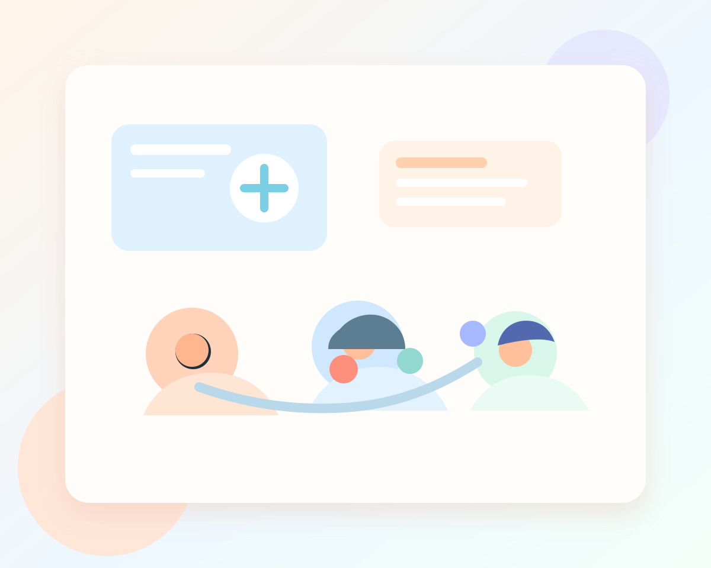
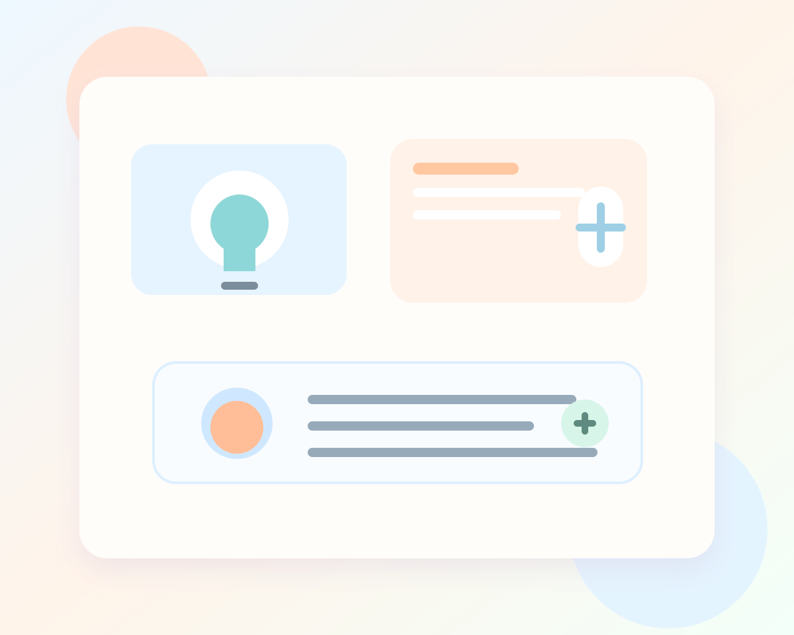

Wie verändert Künstliche Intelligenz unser Leben, unser Denken und unsere Verantwortung?
Dieser Projektkurs verbindet aktuelle Fragen rund um KI mit gesellschaftlichen Debatten und ethischen Perspektiven. Ihr analysiert, wie Algorithmen Entscheidungen beeinflussen, diskutiert Chancen und Risiken und entwickelt eigene Positionen zu Fairness, Menschenbild, Wahrheit, Macht und Verantwortung.
Im Mittelpunkt steht die Frage, wie Künstliche Intelligenz unsere Gesellschaft verändert und welche Verantwortung damit verbunden ist. Gemeinsam schaut ihr euch an, wie KI heute schon in sozialen Medien, bei Bewerbungen, in Medizin, Schule, Politik oder Sicherheit eingesetzt wird. Ihr untersucht, wer von dieser Technik profitiert, wer benachteiligt werden kann und welche Regeln nötig sind, damit digitale Entwicklungen fair bleiben.
Dabei verbindet der Kurs gesellschaftliche Analyse mit ethischen Fragen: Was ist eigentlich noch eine freie Entscheidung, wenn Algorithmen mitlenken? Wie verändert KI unser Bild vom Menschen? Und wie gehen wir damit um, wenn Maschinen Texte, Bilder oder sogar Meinungen erzeugen? Der Kurs eignet sich für alle, die gerne mitdenken, diskutieren, recherchieren und aktuelle Entwicklungen nicht nur konsumieren, sondern wirklich verstehen wollen.


